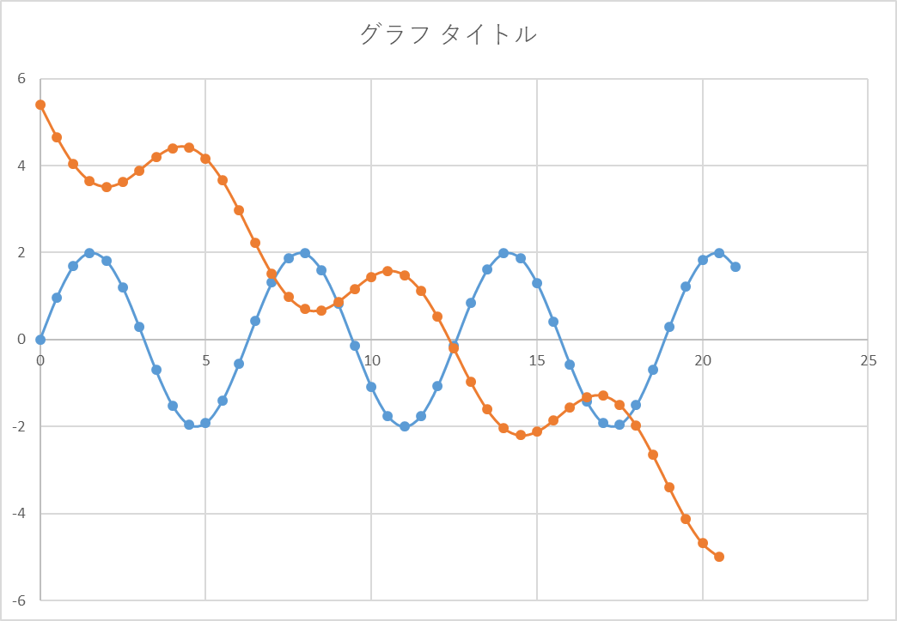
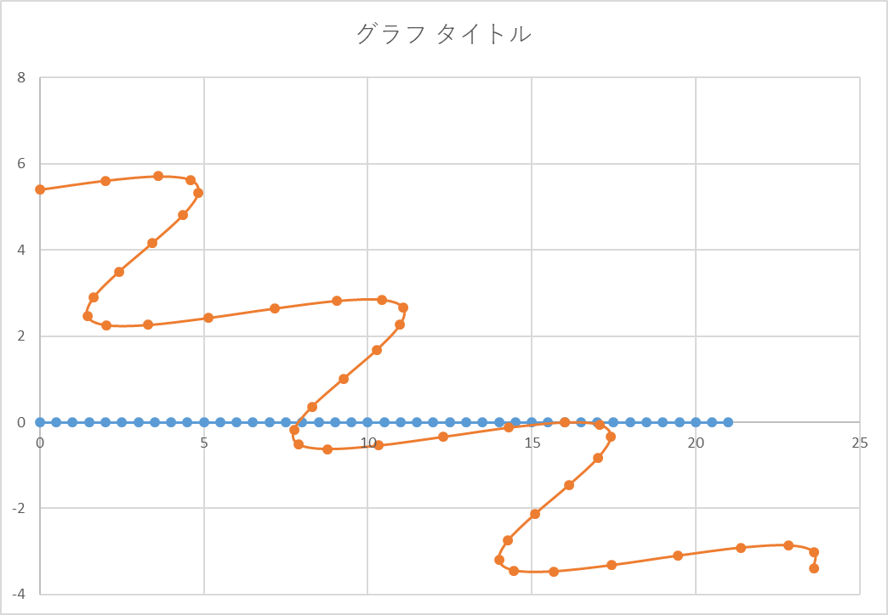
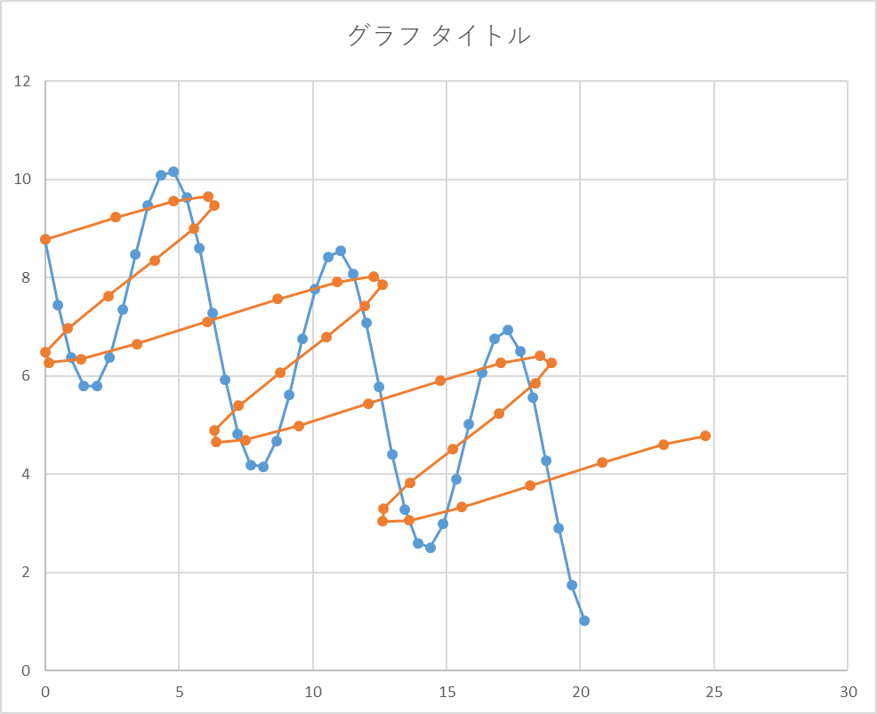

斜め上から波形を描画する方法-07
結論
\(\Large x' = x cos \varphi + z sin \varphi \)
\(\Large y' = ( M - y + z sin \theta) \ cos \theta - x sin \varphi sin \theta \)
となります．
実際に，正弦波を斜め上から見てみましょう．
XY平面上の正弦波

青が元波形，オレンジが投影波形です．
XZ平面上の正弦波

青が元波形，オレンジが投影波形．当然ながら元波形では角度がついていないので波形は観察できません．
次に，XY平面上の正弦波とXZ平面上の正弦波の合成波形を描画しましょう．
合成波形

このように結構よい結果となりました． しかしながら，まだパラメータをいじると，振幅大きさ，位相が逆転するなど，いろいろとまだ問題がありそう．．．